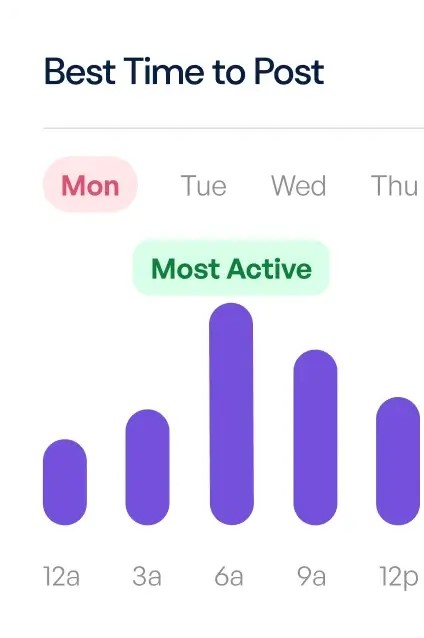

Create and schedule content quicker.

Social Media 10x Faster with AI

Over 4,000 5-star reviews
Schedule to social media.
Optimize post timings to publish content at the perfect time for your audience.
Write your content using AI.


Manage multiple accounts and platforms.
Maintain a consistent posting schedule.
>56%
faster audience growth


Grow followers with non-stop content.